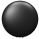
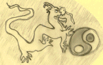
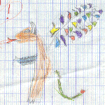

Drago - Credits and thanks
Drago - Credits and thanks
Drago is a Go program written with the Delphi programming platform. Fortunately, the Go and the Delphi communities are both very kind. They must be credited and thanked here.
Delphi components
- Drago uses the SpTBXLib components.
Thanks to:
- Angus Johnson for sharing his TPages report component.
- Takeshi Kanno for his open source library libHaru PDF which enables to create PDF documents from Delphi. Many thanks especially for the examples he sent to me.
- Anders Melander for his TGIFImage component.
- Finn Tolderlund to maintain TGIFImage and port it to Delphi 7.
- Gustavo Daud for his PNGImage component.
- Florian Bömers for his OneInstance component.
- Maxime Collomb for his DosCommand component.
- Mike Lischke for his Virtual Treeview.
Kombilo
Thanks a lot to Ulrich Goertz for sharing his database library libkombilo.
Stones
I thank gratefully the following people for giving me permission to use their stone bitmaps or drawing algorithms:
- Jean-François Menon for the stones from his internet client RubyGo.
- Rene Grothmann for the drawing algorithm from his internet client Jago.
- Marco Scheurer for the stones from his Mac program Sente Goban.

Board texture
Thanks to JK, A Sweet Dreamer for the permission to use the board texture from his Go program WildCard. The old default one in Drago was becoming outdated and I really like this one.
Translations
Thanks a lot to translators. Having translated two programs, I can really appreciate the work they have done...
- Arabic
- Abdelkarim
- Brazilian Portuguese
- Silvio Faria
- Chinese simplified
- xiaodiega. His minipad2 (a kind of Swiss knife with editor, dictionary, calculator, clipboard enhancer, reminder) is worth a try.
- Chinese traditional
- xiaodiega and 子傑 周 for update
- Czech
- chejnik Finnish
- Mika Kaakinen
- German
- Fabian
- Hungarian
- István
- Italian
- Marco Falcinelli
- Japanese
- colon
- Korean
- 子傑 周
- Polish
- Ignus
- Russian
- Evgeny
- Slovak
- Inimma
- Turkish
- Bayram
- Vietnamese
- KoKs
Advertising
Thanks to Arno and Morten for Sensei's Library, for all the information and resources which can be found there, and for the community adversing service they propose.
Banner
Thanks a lot to Jérôme Choain for his very nice banner for SL.
Special thanks
Thanks to Ulrich Goertz who allowed me to include some of the problem collections available on his uliGo site. Thanks also for his encouragement and advice at the time of the first release.
Thanks a lot to all people who have shown interest for Drago by giving feedbacks and suggestions.
Very special thanks

... and thanks to my daughter Marion who eventually accepted the name Drago: Drago has a bad reputation for the moment (Drago is the French for Draco) but it is not so easy to find a name for Go software!
